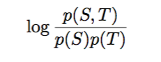
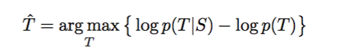
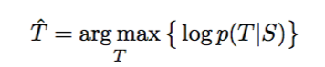
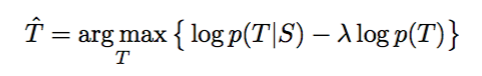
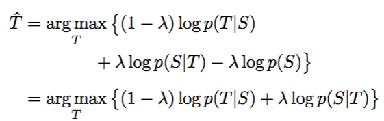
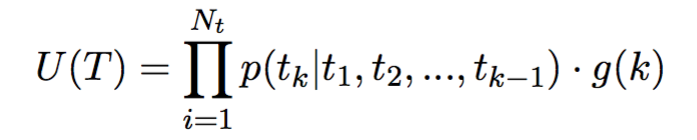
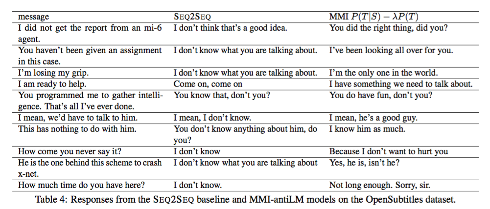
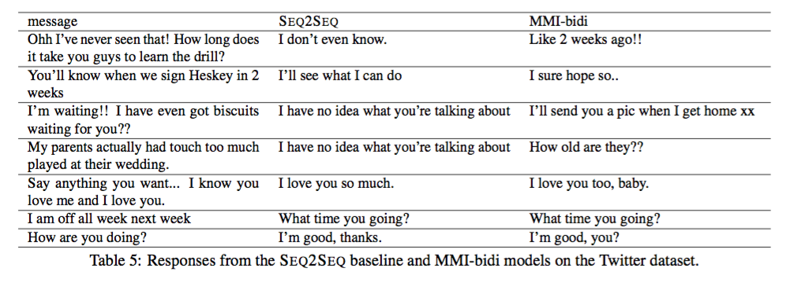

A Diversity-Promoting Objective Function for Neural Conversation Models #PaperWeekly#
本篇分享的文章是前一篇分享A Persona-Based Neural Conversation Model的pre-paper，题目是A Diversity-Promoting Objective Function for Neural Conversation Models，作者是Jiwei Li，最早于2015年10月11日发在arxiv上。
本文针对的问题是seq2seq方案在解决bot问题上容易生成一些“呵呵”的reply，比如“I don’t know”之类的非常safe，grammatical的reply，但是营养太少，没有太多实际的意义。造成这种情况的原因是目标函数不合适，在最近流行的自然语言生成任务中一般都采用MLE作为目标函数，这个目标函数可以保证生成出最自然的语言，但diversity太差，当然如果在decoding部分生成大量的N-best list的话，也是有很多不错的reply但都排名很靠后。
本文就是针对这样的一个问题，提出了用Maximum Mutual Information（MMI）作为目标函数来提高reply的diversity和实用性。MMI这个目标函数在Jiwei Li的多篇文章中都出现过，他很喜欢用这个来代替MLE作为目标函数来解决问题。互信息的方程如下：

经过简单的推导，可得出下式作为目标函数：

而，一般的seq2seq采用MLE，如下式：

本文方法比传统seq2seq多了后面的一项。
p(T)其实是一个语言模型，为了在目标中控制reply的多样性，添加一个惩罚系数，如下式：

这个式子记作(4)，经过简单的推导得到下式：

记作(5)
作者根据式子(4)和(5)提出了两种MMI，分别是MMI-antiLM和MMI-bidi。
首先是antiLM，单看-log p(T)这一项，其实就是一个语言模型，anti表示反着的，因为有个负号。这一项不仅仅可以影响到你生成reply的diversity，同时也可以影响到你生成的reply是否是grammatical的，其实是一把双刃剑，需要做好控制，一般来说lambda小于1之后，后一项的影响相对较小了。
本文用一个带权重的语言模型U(T)来替换当前的p(T)，如下式：

这里g(k)是权重，k是index，g(k)的特点是随着k的增加单调递减。这样做有两个目的：
1、decoding时对先生成的词的惩罚比后生成的词的惩罚对diversity的影响更大。
2、随着decoding部分的输入对后续生成影响的减弱，语言模型U(T)将会占主导地位，reply后面的部分也会非常grammatical。
bidi这个目标函数的思路是，先从第一项来生成N-Best List，然后用第二项对其进行排序，将diversity更好的reply放在前面。
在训练过程中，仍旧是采用MLE，但在测试的时候，用本文提到的MMI来做测试。
这个结果是由MMI-antiLM产生的：

这个结果是MMI-bidi产生的：

生成的reply确实seq2seq更加有营养。
本文解决问题的一个思路是很有借鉴意义的，正如abstractive summarization中有一篇paper用MRT来替换传统的MLE作为目标函数，将评价指标考虑进了目标函数中进行优化，起码在benchmark上得到非常好的结果。这其实是一条不错的路，就是将你当前的评价指标融入到你的优化目标中进行优化学习，自然会得到比单纯地用MLE来优化要好的多，也有很多的paper在用这样的思路解决问题。我们不仅仅满足于可以生成一个grammatical的reply，我们更需要的是有意义的、有实际使用价值的bot。另外就是具体到目标函数的建模，如果你希望目标中减小哪些因素对目标的影响，就增加一项惩罚项，这也是做优化时候的一般方案，但在解决具体问题时会非常有效。本文虽然针对的是bot reply的生成问题，其实可以推广到一般的自然语言生成问题上来，只是要涉及到MLE做生成都可以换成本文的方法来提升相应的指标。
一点思考，欢迎交流。